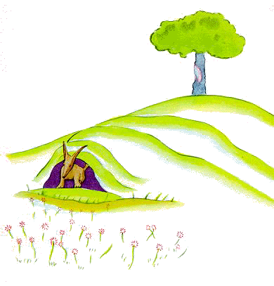
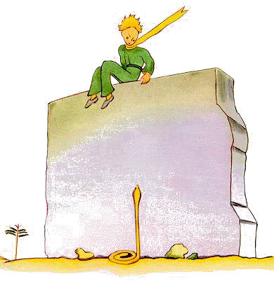

← Quay Về
Hoàng Tử Bé
Antoine de Saint Exupéry
Vĩnh Lạc dịch
XX
Nhưng ông hoàng nhỏ, sau khi đi rất lâu qua cát, đá và tuyết, cuối cùng cũng tìm thấy một con đường. Và mọi con
đường đều đưa đến chỗ có người ở.
– Chúc một ngày tốt lành, em
nói.
ấy là một khu vườn đầy hoa hồng
– Chúc một ngày tốt lành, các hoa hồng trả
lời.
Ông hoàng nhỏ nhìn các hoa hồng. Tất cả bọn họ đều giống
bông hoa của em.
– Các nàng là ai? Em hỏi họ, sững sờ kinh
ngạc.
– Chúng em là những đoá hoa hồng, các hoa hồng nói.
–
A! Ông hoàng nhỏ kêu lên.
Và em cảm thấy rất đau khổ. Đoá hoa
của em đã đã kể với em rằng nàng là duy nhất trong giống nòi của nàng khắp
trong vũ trụ. Và ở đây có đến năm nghìn đoá giống như nhau, chỉ mới trong
mỗi một khu vườn.
"Nàng sẽ ngượng lắm đây, em nghĩ thầm, nếu thấy
cảnh này. Nàng sẽ ho rũ rượi và giả chết cho đỡ ngượng. Còn ta sẽ phải làm
ra vẻ an ủi vỗ về nàng, nếu không, để làm chính ta cũng phải xấu hổ, nàng
dám chết thật mất".
Rồi em lại tự bảo: "Ta tưởng ta đã giàu lắm với
một đoá hoa duy nhất. Cái đó cộng với ba quả núi lửa cao ngang đầu gối cuả
ta, mà một quả, có lẽ, đã tắt mãi mãi, cái đó chẳng làm cho ta thành một
ông hoàng lớn lắm đâu". Và, nằm dài trong cỏ, em khóc.
XXI
Chính vào lúc đó con
cáo xuất hiện.
– Chúc một ngày tốt lành, con cáo
nói.
– Chúc một ngày tốt lành, ông hoàng nhỏ đáp lại lịch sự, em
quay lại nhưng chẳng thấy gì cả.
– Tớ đây này, giọng nói cất lên, ở
dưới cây táo
– Cậu là ai thế? Ông hoàng nhỏ nói, cậu thật là
xinh.
– Tớ là một con cáo, con cáo nói.
– Đến chơi với mình
đi, ông hoàng nhỏ rủ cáo. Mình buồn quá..
– Tớ không chơi với cậu
được. Tớ chưa được cảm hoá.
– à! Xin lỗi, ông hoàng nhỏ
nói.
Nhưng sau khi suy nghĩ, em hỏi thêm
– Thế nào gọi là "cảm hoá"?
– Cậu
không phải dân ở đây. Cậu đi tìm cái gì?
– Tớ đi tìm những con
người, ông hoàng nhỏ nói. Thế nào gọi là "cảm hoá"?
– Loài người,
cáo nói, họ có súng và họ. Phiền lắm. Họ cũng nuôi gà nữa. Đó là cái duy
nhất hấp dẫn ở họ. Cậu đi kiếm gà phải không?
– Không! Ông hoàng
nhỏ nói, mình kiếm bạn. Thế nào gọi là "cảm hoá"?
– ấy là một điều
bị lãng quên quá rồi, cáo nói. Nó có nghĩa là " tạo lên những liên hệ
.."
– Tạo lên những liên hệ?
– Đúng như vậy, con cáo nói.
Đối với tớ hiện giờ cậu chỉ là một cậu bé hoàn toàn giống trăm nghìn cậu
bé khác. Và tớ chẳng cần gì ở cậu. Và cậu cũng chẳng cần gì ở tớ. Tớ đối
đối với cậu chỉ là một con cáo giống như trăm nghìn con cáo. Nhưng, nếu
cậu cảm hoá tớ, cậu sẽ là duy nhất trên đời...
– Tớ bắt đầu hiểu,
ông hoàng nhỏ nói. Có một bông hoa ...tớ nghĩ là nàng cảm hoá
tớ...
– Có thể lắm, cáo nói. Có thể gặp mọi sự trên trái đất
này...
– ồ! Không phải trên trái trái đất này đâu, ông hoàng nhỏ
nói.
Con cáo có vẻ chú ý:
– Trên một hành tinh khác à?
–
Phải.
– Trên hành tinh ấy, có thợ săn không?
–
Không.
– Thế thì hay đấy. Thế còn gà?
– Không.
– Chả
có điều gì là hoàn hảo cả! Cáo thở dài.
Nhưng rồi cáo trở lại
với ý nghĩ của nó:
– Đời tớ tẻ nhạt. Tớ săn gà, người săn tớ.
Tất cả loài gà đều giống nhau, và tất cả loài người đều giống nhau. Vì
thế, tớ hơi chán. Nhưng nếu cậu cảm tớ, đời tớ sẽ rực nắng. Tớ sẽ nhận ra
một bước chân khác hẳn mọi bước chân khác. Các bước chân khác sẽ làm cho
tớ chui ngay xuống đất. Nhưng bước chân của cậu lại sẽ gọi tớ từ hang chạy
ra, như là một điệu nhạc. Và cậu hãy nhìn kia! Cậu thấy không, ở kia,
những đồng lúa mì ấy? Tớ không ăn bánh mì. Lúa mì đối với tớ là vô dụng.
Các cánh đồng lúa mì đối với tớ chẳng có gì khêu gợi. Cái đó buồn lắm.
Nhưng cậu có mái tóc mầu vàng kim. Thế thì sẽ rất tuyệt một khi cậu cảm
hoá tớ! Lúa mì, vốn màu vàng kim, sẽ gợi cho tớ kỷ niệm về cậu. Và tớ sẽ
yêu tiếng gió reo trong lúa mì...
Cáo im lặng và nhìn ông
hoàng nhỏ một lúc lâu:
– Nếu cậu vui lòng, hãy cảm hoá tớ đi, cáo
nói!
– Tớ cũng muốn thế lắm, ông hoàng nhỏ trả lời, nhưng tớ không
có nhiều thì giờ. Tớ cần tìm kiếm nhiều bạn và tìm hiểu bao nhiêu sự
vật.
– Người ta chỉ hiểu được những vật người ta đã cảm hoá, cáo
nói. Loài người bây giờ không còn đủ thì giờ hiểu cái gì hết. Họ mua những
vật làm sẵn ở các nhà buôn. Nhưng không ở đâu có nhà buôn bạn, con người
không có bạn nữa. Nếu cậu muốn có một người bạn, hãy cảm hoá tớ!
–
Phải làm sao? ông hoàng nhỏ hỏi.
– Phải thật kiên nhẫn, cáo trả
lời. Ban đầu cậu hãy ngồi hơi xa tớ một tí, như thế, ở trong cỏ. Tớ dưa
mắt liếc nhìn cậu, và cậu chẳng nói gì cả. Ngôn ngữ là nguồn gốc của ngộ
nhận. Nhưng mỗi ngày, cậu có thể ngồi gần một tí...

Ngày hôm
sau, ông hoàng nhỏ trở lại.
– Tốt hơn là nên đến đúng giờ như hôm trước,
cáo nói. Nếu cậu đến, chẳng hạn như lúc bốn giờ chiều, thì từ ba giờ, mình
đã cảm thấy hạnh phúc. Thời khắc càng trôi, mình lại càng hạnh phúc. Đến
bốn giờ thì mình phát cuồng lên và lo lắng; và mình sẽ hiểu cái giá của
hạnh phúc! Nhưng nếu cậu đến bất cứ lúc nào, mình không biết lúc nào thì
nên trang phục cho cõi lòng mình... Phải có nghi thức chứ.
– Nghi
thức là cái gì? ông hoàng nhỏ hỏi.
– Đó cũng là cái bị quên lâu quá
rồi, cáo nói. Đó cũng là cái gì làm cho một ngày trở nên khác những ngày
khác, một giờ trở nên khác những giờ khác. Có một nghi thức, chẳng hạn của
bọn thợ săn của tớ. Mỗi thứ năm, họ khiêu vũ với các cô gái trong làng.
Thế thì thứ năm là một ngày kỳ diệu! Hôm ấy tớ có thể rong chơi đến tận
vườn nho. Nếu bọn thợ săn mà khiêu vũ bất cứ ngày nào, thì ngày nào cũng
như ngày nào, tớ sẽ chẳng có ngày nào được nghỉ nữa.
Thế là
ông hoàng nhỏ cảm hoá con cáo. Và giờ ra đi đã đến:
– A! Cáo nói, tớ sắp khóc lên đây.
–
Đó là lỗi tại cậu, ông hoàng nhỏ nói. Mình tuyệt chẳng muốn cậu khổ, cậu
lại cứ muốn mình cảm hoá cậu.
– Đúng thế, cáo nói.
– Nhưng
cậu sẽ khóc! ông hoàng nhỏ nói.
– Đúng thế, cáo nói.
– Thế
thì cậu chẳng được gì cả!
– Được chứ, cáo nói, là do cái màu vàng
của lúa mì ấy.
Rồi nó nói thêm:
– Hãy trở lại thăm những đoá hồng đi. Cậu sẽ
thấy đoá hoa của cậu là duy nhất trên đời. Rồi cậu hãy lại đây từ biệt tớ,
tớ sẽ làm quà cho cậu một điều bí mật.
Ông hoàng nhỏ đi thăm
lại những đoá hoa hồng.
– Các cô chẳng giống chút nào với đoá hồng
của tôi, các cô chưa là gì cả, em bảo các bông hồng. Chưa ai cảm hoá các
cô, các cô cũng chưa cảm hoá ai. Các cô giống như con cáo của tôi trước
kia. Nó chỉ là một con cáo giống như trăm nghìn con cáo. Song tôi đã làm
cho nó trở thành bạn tôi, và bây giờ nó trở nên duy nhất trên
đời.
Và các bông hồng hết sức lúng túng.
– Các cô đẹp, nhưng các cô trống rỗng, em
nói với họ. Người ta không thể chết vì các cô được. Phải, đoá hồng của
tôi, một người qua đường tầm thường tưởng là nàng giống các cô. Nhưng đối
với tôi thì nàng quan trọng hơn tất cả các cô, bởi vì chính là nàng mà tay
tôi đã tưới. Bởi vì chính là nàng mà tôi đã đặt chính dưới bầu kính. Bởi
vì chính là nàng mà tôi đã che bằng tấm bình phong. Bởi vì là nàng mà tôi
đã bắt những con sâu (trừ hai ba con dành để thành bướm). Bởi vì chính là
nàng mà tôi đã ngồi nghe than thở, hay tán hươu tán vượn, hay đôi khi cả
lặng im nữa. Bởi vì đó là đoá hồng của tôi.
Rồi em trở lại
chỗ con cáo:
– Từ biệt, em nói.
– Từ biệt, cáo
nói. Đây là cái bí mật của tớ. Nó đơn giản thôi: người ta chỉ nhìn thấy
thật rõ ràng bằng trái tim. Cái cốt yếu thì con mắt không nhìn
thấy.
– Cái cốt yếu thì con mắt không nhìn thấy, ông hoàng nhỏ lặp
lại, để mà ghi nhớ.
– Chính thời giờ cậu đã mất, cho đoá hồng của
cậu làm cho đoá hồng của cậu trở nên quan trọng đến thế.
– Chính
thời giờ tôi đã mất cho bông hồng của tôi... ông hoàng nhỏ nói, để mà ghi
nhớ.
– Loài người đã quên mất chân lý này, cáo nói. Nhưng cậu không
được quên. Cậu trở nên mãi mãi có trách nhiệm về những gì cậu đã cảm hoá.
Cậu có trách nhiệm đối với hoa hồng của cậu.
– Tôi có trách nhiệm
với hoa hồng của tôi ... ông hoàng nhỏ lặp lại để mà ghi
nhớ.
XXII
– Xin chào, ông hoàng nhỏ nói.
– Xin
chào, người bẻ ghi nói.
– Ông làm gì ở đây? Ông hoàng nhỏ
hỏi.
– Ta xếp hành khách, thành từng gói nghìn người một, người bẻ
ghi nói. Ta hướng dẫn những chuyến tàu trở chúng đi, lúc về bên phải, lúc
về bên trái.
Rồi một con tàu nhanh sáng choang, gầm như sấm, làm
căn phòng gác ghi rung lên.
– Họ vội quá, ông hoàng nhỏ nói. Họ tìm
cái gì vậy?
– Chính người lái tàu cũng không biết, người gác ghi
nói..
Và lại gầm lên, từ hướng ngược lại, một chuyến tàu nhanh thứ
hai sáng choang.
– Họ đã trở về rồi ư? ông hoàng nhỏ
hỏi...
– Không phải những người khi nãy. Họ đổi chỗ đấy.
–
Họ không bằng lòng chỗ của họ?
– Người ta không bao giờ bằng lòng
chỗ của mình cả! Người bẻ ghi nói.
Và lại tiếng ầm ầm của
chiếc tàu nhanh thứ ba sáng choang.
– Họ đuổi theo những hành khách lúc nãy phải
không? ông hoàng nhỏ hỏi.
– Họ chẳng đuổi theo cái gì hết, người bẻ
ghi nói. Họ ngủ gật hoặc ngồi ngáp vặt trong đó. Chỉ có những đứa trẻ là
dán mũi vào cửa kính thôi.
– Chỉ có những đứa trẻ là biết mình tìm
cái gì, ông hoàng nhỏ nói, chúng mất thì giờ vì một con búp bê bằng giẻ
rách, và con búp bê ấy trở nên quan trọng lắm, ai lấy đi của chúng, chúng
sẽ khóc...
– Chúng thật may mắn, người bẻ ghi nói.
XXIII
– Xin chào, ông hoàng nhỏ nói.
– Xin
chào, người lái buôn nói.
ấy là một người bán loại thuốc có thể làm
cho đỡ khát. Mỗi lần uống một viên, và người ta sẽ thấy không cần phải
uống nước nữa.
– Tại sao ông bán thứ đó? ông hoàng nhỏ
hỏi.
– Đây là một sự tiết kiệm lớn về thời giờ, người lái buôn nói.
Các nhà chuyên môn đã có tính toán. Mỗi tuần lễ ta sẽ tiết kiệm được năm
mươi ba phút.
– Thế người ta dùng năm mươi ba phút ấy để làm
gì?
– Muốn làm gì thì làm ...
"Ta, ông hoàng nhỏ nghĩ
thầm, nếu ta có năm mươi ba phút để làm gì thì làm, ta sẽ bước thật nhẹ
nhàng đến một cái nguồn nước..."
XXIV
Lúc đó là ngày thứ
tám từ khi tôi bị hỏng máy trong sa mạc, và tôi vừa nghe câu chuyện người
lái buôn vừa uống giọt nước cuối cùng trong số nước dự trữ.
– A! Tôi nói với ông hoàng nhỏ, các kỷ niệm
của em thật là đẹp, nhưng anh vẫn chưa chữa được máy bay của anh, anh
chẳng còn gì để uống nữa, và anh cũng sẽ hạnh phúc lắm đấy, nếu bây giờ
anh cũng có thể bước thật nhẹ nhàng đến một cái nguồn nước!
– Bạn
cáo của tôi ơi, em nói ...
– Chú em bé bỏng ơi, bây giờ còn chồn
cáo gì nữa!
– Sao thế?
– Bởi vì ta sắp chết
khát...
Em không hiểu lý lẽ của tôi, em trả lời tôi:
– Có được một người bạn là tuyệt chứ, dù cho
ta sắp chết đi nữa. Tôi, tôi rất hài lòng được có bạn cáo của tôi
...
Em không lường được hiểm nguy, tôi nghĩ thầm. Em không hề
đói hay khát. Một chút mặt trời cũng đủ cho em rồi.
Nhưng em nhìn
tôi và trả lời điều tôi vừa nghĩ:
– Tôi cũng đang khát... ta đi tìm một cái
giếng đi ...
Tôi phác một cử chỉ mệt mỏi: thật là phi lý khi
đi tìm một cái giếng, một cách hú hoạ, ở trong sa mạc mênh mông. Tuy thế,
chúng tôi vẫn bước đi.
Khi chúng tôi bước đi, im lặng, giờ này qua
giờ khác, màn đêm buông xuống và các vì sao bắt đầu toả sáng. Tôi nhìn mọi
vật như trong cơn mê, đầu nóng bừng vì khát. Những lời ông hoàng bé nhỏ
nói nhảy múa trong trí nhớ tôi.
– Em, em cũng khát hay sao? Tôi hỏi
em.
Nhưng em không trả lời câu tôi hỏi. Em chỉ nói giản
dị:
– Nước cũng có thể tốt lành cho trái
tim...
Tôi không hiểu câu em đáp nhưng tôi im lặng ... tôi
biết là không nên hỏi em.
Em thấy mệt. Em ngồi xuống. Tôi ngồi
xuống cạnh em. Và sau một lát im lặng, em lại nói:
– Các ngôi sao đẹp, là do ở đó có một bông
hoa mà người ta không nhìn thấy...
Tôi đáp lại "Đúng thế" và
tôi nhìn, không nói, những gợn sóng của cát dưới ánh trăng.
– Sa mạc thật đẹp, em nói
thêm...
Điều này đúng. Bao giờ tôi cũng yêu sa mạc. Ta ngồi
trên một đụn cát. Ta không trông thấy gì hết. Ta không nghe thấy gì hết.
Nhưng có một cái gì đó toả sáng trong lặng lẽ...
– Cái đã tô điểm cho sa mạc, ông hoàng nhỏ
nói, là nó ẩn giấu một cái giếng ở nơi nào đó...
Tôi kinh
ngạc vì bỗng nhiên hiểu ra cái ánh sáng huyền bí ấycủa cát. Khi còn là một
cậu bé tôi ở trong một ngôi nhà cổ, và có một truyền thuyết là ở ngôi nhà
cổ này có chôn một kho báu. Tất nhiên, chưa ai tìm ra kho báu đó, có lẽ
cũng chưa ai thử đi tìm. Nhưng nó đã làm cho ngôi nhà trở nên thành tiên.
Cái nhà của tôi có giấu trong đáy trái tim của nó một điều bí
mật...
– Phải, tôi nói với ông hoàng nhỏ. Dù là
ngôi nhà, ngôi sao hay sa mạc, cái làm chúng ta trở nên đẹp thì không thể
nhìn thấy!
– Tôi rất hài lòng, em nói, vì ông cũng đồng ý với bạn
cáo của tôi.
Khi ông hoàng nhỏ bé thiu thiu ngủ, tôi bế em
lên vòng tay và lại lên đường. Lòng tôi xúc động. Tôi có cảm giác như đang
giữ một kho báu mong manh. Tôi có cảm giác như trên Trái Đất này không có
gì mong manh hơn. Tôi nhìn, dưới ánh sáng trăng, vầng trán xanh xao ấy,
đôi mắt nhắm nghiền, những lọn tóc run rẩy trước gió, và tôi nghĩ thầm:
cái mà ta thấy đây chỉ là một cái vỏ. Cái quan trọng nhất thì không nhìn
thấy được ...
Khi đôi môi hé mở của em thoáng một nụ cười, tôi lại
tự nhủ: cái làm cho ta xúc động mạnh đến thế về ông hoàng bé nhỏ đang ngủ
này, đó là lòng chung thuỷ của em đối với một đoá hoa hồng, ấy là hình ảnh
một đoá hồng rực sáng nơi em như một ngọn đèn, cả trong khi em ngủ... Và
tôi càng thấy em còn mong manh hơn. Ta phải hết sức che chở cho những ngọn
đèn: một ngọn gió có thể thổi tắt được ...
Và, cứ bước đi như vậy,
tôi tìm ra cái giếng vào lúc rạng đông.
XXV
– Con người, ông hoàng nhỏ nói, họ chui vào
các chuyến tàu nhanh, nhưng họ chẳng biết mình tìm kiếm thứ gì. Thế mà họ
cứ cuống quít lên và quay cuồng ...
Và em nói thêm:
– Nào có ích gì...
Cái giếng mà
chúng tôi đến, nó không giống các giếng ở sa mạc Sahara. Các giếng Sahara
chỉ đơn giản là những cái lỗ đào trong cát. Còn cái này giống như giếng
làng. Nhưng ở đấy chẳng có ngôi làng nào, và tôi tưởng mình đang
mơ.
– Lạ thật, tôi nói với ông hoàng nhỏ, mọi
cái đều có sẵn: cái ròng rọc, cái gầu và sợi dây...
Em cười,
sờ sợi dây, lăn cái ròng rọc. Và cái ròng rọc liền rên một tiếng, giống
như tiếng rên của cái chong chóng chỉ hướng gió sau một hồi gió ngủ yên
lâu quá.
– Ông nghe thấy không, ông hoàng nhỏ nói, ta
đánh thức cái giếng này và nó hát ...
Tôi không muốn em gắng
sức:
– Để anh, tôi nói, nó nặng quá đối với
em.
Chậm rãi, tôi kéo gàu lên thành giếng. Tôi đặt nó chắc
chắn trên đó. Trong tai tôi vẫn còn văng vẳng tiếng hát của cái ròng rọc,
và trong nước vẫn còn run rẩy, tôi thấy mặt trời run lên.
– Tôi khát thứ nước này đây, ông hoàng nhỏ
nói. Cho tôi uống đi...
Và tôi hiểu ra em tìm kiếm cái
gì.
Tôi nhắc chiếc gầu lên kề môi em. Em uống, hai mắt nhắm nghiền.
Êm đềm như một ngày hội. Thứ nước này còn là một cái gì khác hơn mọt thứ
nước uống. Nó sinh ra từ cuộc đi bộ dưới trời sao, từ tiếng hát của cái
ròng rọc, từ sự gắng sức của cánh tay tôi. Nó tốt lành cho tim ta, như một
món quà tặng. Ngày tôi còn là một cậu bé, ánh sáng của cây Noel, tiếng
nhạc của buổi lễ nửa đêm, những nụ cười dịu dàng cũng đã làm nên sự rực rỡ
của món quà Noel mà tôi được nhận.
– Loài người nơi ông, ông hoàng nhỏ nói,
trồng năm nghìn hoa hồng cũng trong một khu vườn...thế mà họ chẳng tìm
thấy cái họ tìm ...
– Họ chẳng tìm thấy đâu, tôi nói ...
–
Trong khi cái họ muốn tìm lại có thể gặp trong chỉ một đoá hồng hoặc chỉ
một ít nước...
– Đúng thế, tôi nói.
Và ông hoàng nhỏ
nói thêm:
– Con mắt vốn mù loà. Phải tìm kiếm với trái
tim.
Tôi đã uống. Tôi đã nghỉ ngơi thoả thuê. Vào lúc tinh
mơ, cát một màu mật ong. Tôi thấy sung sướng cả vì cái màu mật ong ấy nữa.
Tại sao tôi cứ phải khổ sở...
– Ông phải giữ lời hứa, ông hoàng nhỏ bây
giờ lại ngồi xuống bên tôi, nhẹ nhàng nói.
– Lời hứa nào?
–
Ông biết đấy ... Một cái rọ mõm cho con cừu của tôi... Tôi chịu trách
nhiệm về cái hoa ấy!
Tôi rút từ trong túi áo ra các bản vẽ
phác của tôi. Ông hoàng nhỏ trông thấy các bức vẽ bèn cười bảo:
– Các cây baobap của ông, trông giống như
các cây cải hoa ấy...
– ồ!
Tôi vốn tự hào biết bao với
bức vẽ các cây bao bap!
– Con cáo của ông... hai tai nó...trông
giống như hai cái sừng...và lại dài quá!
Và em lại cười
nữa.
– Cậu không công bằng, cậu nhỏ ơi, tôi vốn
chỉ biết vẽ trăn kín với chăn mở thôi mà!
– ồ! Được cả thôi, em
nói, trẻ con chúng hiểu hết.
Thế là tôi dùng bút chì phác một
cái rọ mõm. Và lòng tôi se lại khi đưa cái rọ mõm đó cho em:
– Em có những sự định mà tôi không được
rõ...
Nhưng em chẳng trả lời tôi. Em bảo tôi:
– Ông biết không, ngày tôi rơi xuống Trái
Đất... mai đã là tròn một năm...
Rồi, sau một lát im lặng, em
lại nói:
– Tôi rơi xuống ngay gần
đây...
Và em đỏ mặt.
Và một lần nữa, chẳng hiểu tại
sao, tôi cảm thấy buồn bã một cách kỳ lạ. Khi ấy tôi bỗng buột miệng
hỏi:
– Thế ra không phải là ngẫu nhiên mà, buổi
sáng ấy, tôi gặp em, cách đây tám ngày, em lang thang một mình một nghìn
dặm cách mọi vùng có người ở! Em trở lại nơi em rơi xuống hay
sao?
Ông hoàng nhỏ lại đỏ mặt.
Và tôi nói thêm, ngập
ngừng:
– Là vì, có lẽ, vì ngày kỷ niệm
chăng?
Ông hoàng lại đỏ mặt lần nữa. Em không bao giờ trả lời
các câu hỏi, nhưng khi người ta đỏ mặt, như thế có nghĩa là "phải", phải
không?
– A, tôi nói, tôi sợ...
Nhưng
em trả lời tôi:
– Bây giờ ông phải làm việc thôi. Ông phải
trở về chỗ cái máy của ông. Tôi đợi ông ở đây. Chiều mai ông hãy
đến...
Song tôi không yên tâm. Tôi nhớ chuyện con cáo. Có
nguy cơ là ta có thể khóc một tí nếu ta lỡ để cho ai cảm hoá
mình...
XXVI
Cạnh cái giếng, có
một bức tường đổ nát. Khi ở chỗ làm việc trở lại vào chiều hôm sau, từ xa
tôi đã thấy ông hoàng nhỏ của tôi ngồi trên đó, hai chân lơ lửng. Và tôi
nghe em nói:
– Thế anh không nhớ sao? Không phải là chỗ
này đâu!
Một giọng nói khác có lẽ trả lời em, vì em lại
đáp:
– Phải! Phải! Ngày thì đúng, nhưng không
phải chỗ này...
Tôi bước tiếp đến chỗ bức thành. Tôi vẫn
không nhìn thấy, cũng chẳng nghe thấy ai. Thế nhưng, ông hoàng nhỏ lại đáp
nữa:
– ... Đúng thế. Anh cứ xem nơi nào bắt đầu có dấu chân của tôi
ở trên cát. Anh chỉ việc đợi tôi ở đấy. Tôi sẽ đến đêm nay.
Tôi chỉ
cách bức tường có hai mươi mét và tôi vẫn chẳng nhìn thấy gì.
Ông
hoàng nhỏ lại nói, sau một lát im lặng:
– Anh có nọc tốt đấy chứ? Anh chắc là không
làm tôi đau lâu chứ?
Tôi dừng lại, trái tim se thắt, nhưng
tôi vẫn không hiểu.
– Thôi bây giờ hãy đi đi, em nói. Tôi muốn
xuống.

Thế là chính tôi nhìn xuống chân tường, và tôi nhảy
dựng lên. Nó ở đó, nó ngẩng đầu lên phía ông hoàng nhỏ, một giống rắn vàng
có thể diệt ta trong ba mươi giây. Vừa lục túi tìm khẩu súng ngắn, tôi vừa
chạy tới, nhưng, nghe tiếng tôi, con rắn liền chuồn trong cát, như thể một
dòng nước chảy đi, và chẳng cần phải vội vàng, nó luồn lách giữa các tảng
đá với một tiếng động nhè nhẹ như tiếng va chạm của kim khí.
Tôi
đến bên bức tường vừa đúng lúc để đón trong vòng tay tôi ông hoàng bé nhỏ,
trắng bệch như tuyết.
– Chuyện quái quỉ gì thế! Bây giờ em lại đi
trò chuyện với rắn!
Tôi tháo chiếc khăn vàng kim bao giờ cũng
khoác ở cổ em. Tôi dấp nước vào chán em và cho em uống. Và bây giờ, tôi
không dám hỏi em điều gì nữa. Em nhìn tôi nghiêm nghị và đưa hai tay ôm cổ
tôi. Tôi nghe tiếng tim em đập như tiếng đập của một con chim sắp chết,
khi bị trúng đạn súng săn. Em bảo tôi:
– Tôi rất mừng, vì biết ông đã tìm ra máy
bay của ông thiếu cái gì. Ông sắp trở về nhà ông...
– Sao em
biết?
Đúng là lúc ấy tôi vừa định báo cho em biết, tưởng đã
tuyệt vọng rồi, bỗng dưng tôi lại sửa được máy.
Em chẳng trả lời
câu hỏi của tôi, nhưng lại nói thêm:
– Tôi cũng như ông, hôm nay tôi về nhà
tôi...
Rồi, giọng ngầm ngùi:
– Xa hơn nhiều lắm... khó hơn nhiều
lắm...
Tôi có cảm giác vừa xảy ra một việc gì dị thường. Tôi
siết chặt em trong vòng tay tôi như một em bé, nhưng khi ấy tôi vẫn có cảm
giác em đang tuột thẳng xuống một vực thẳm nào đó dù tôi cố níu giữ
lại...
ánh mắt em nghiêm nghị, mất hút vào một nơi rất xa:
– Tôi có con cừu của ông. Và tôi có cái
thùng cho con cừu. Và tôi có cái rọ mõm...
Và em mỉm cười
buồn buồn.
Tôi đợi rất lâu. Tôi thấy em dần dà ấm lại:
– Cậu em ạ, em đã sợ hãi...
Em
có sợ hãi, đúng rồi! Nhưng em cười dịu dàng:
– Chiều nay tôi sẽ còn sợ nhiều
hơn...
Một lần nữa, tôi lại cảm thấy lạnh buốt người vì một
cái gì đó không thể cứu vãn được nữa. Và tôi hiểu rằng tôi không thể chịu
nổi ý nghĩ rồi đây không bao giờ còn nghe thấy tiếng cười này nữa. Tiếng
cười ấy đối với tôi như một nguồn nước trong sa mạc.
– Cậu em ạ, tôi còn muốn được nghe em
cười...
Nhưng em bảo tôi:
– Đêm nay, vừa đúng một năm. Ngôi sao của
tôi sẽ lại ở đúng bên trên chỗ tôi rơi xuống năm ngoái...
– Cậu em
ạ, có phải là một cơn ác mộng không, chuyện rắn, cuộc hẹn gặp với ngôi sao
này...
Nhưng em không trả lời câu tôi hỏi. Em bảo
tôi:
– Cái gì mà quan trọng, cái đó không nhìn
thấy được...
– Đúng thế...
– Giống như bông hoa của tôi. Khi
ông yêu một bông hoa ở trên một ngôi sao, thật là êm đềm, ban đêm, khi ông
nhìn trời. Tất cả các ngôi sao đều nở hoa.
– Đúng thế...
–
Giống như nước vậy. Nước mà ông cho tôi uống như là âm nhạc, là vì cái
ròng rọc và sợi dây... ông nhớ chứ... thật ngon lành.
– Đúng
thế...
– Ban đêm, ông sẽ nhìn sao. Chỗ tôi bé quá không thể chỉ cho
ông đâu là ngôi sao của tôi được. Thế lại càng hay. Ngôi sao của tôi, đối
với ông sẽ là một trong các ngôi sao kia... Như thế, tất cả các ngôi sao,
ông đều sẽ thích nhìn. Tất cả chúng sẽ là bạn của ông. Và rồi tôi sẽ biếu
ông một món quà...
Em lại cười thêm nữa.
– A! Em ơi, em ơi, tôi thích nghe em cười
như thế này!
– Đúng đó là món quà tôi biếu ông... giống như là nước
vậy...
– Em muốn nói sao?
– Mọi người có những ngôi sao
không của ai giống ai. Đối với một số ưa thích đi xa, các ngôi sao là
những kẻ dẫn đường. Đối với số khác, chúng chỉ là những đốm sáng nhỏ. Đối
với những nhà bác học, chúng là những bài toán. Đối với nhà doanh nghiệp
của tôi, chúng là vàng. Nhưng tất cả loại ngôi sao ấy đều câm lặng. Ông,
ông sẽ có những ngôi sao trước đây không ai có...
– Em muốn nói
sao?
– Khi ông nhìn trời, ban đêm, bởi vì ở một trong những ngôi
sao đó có tôi ở, bởi vì tôi cười trên một trong những ngôi sao đó, cho nên
đối với ông tưởng chừng như tất cả các ngôi sao đều cười. Ông, ông sẽ có
được những ngôi sao biết cười.
Rồi em lại cười nữa.
– Và khi ông đã nguôi rồi (người ta bao giờ
cũng nguôi đi), ông sẽ bằng lòng đã từng được quen biết tôi. Ông mãi mãi
là bạn tôi. Rồi đôi khi ông mở của sổ nhà ông, như thế đấy, để cho vui
thôi... Bạn hữu của ông sẽ lấy làm lạ khi thấy ông vừa nhìn trời vừa cười.
Ông sẽ bảo họ: "Phải, các ngôi sao, lúc nào chúng cũng làm cho mình cười!"
Và họ sẽ tưởng ông điên. Hoá ra tôi chơi khăm ông một
vố...
Rồi em lại cười nữa.
– Xem như tôi đã tặng ông, thay vì những
ngôi sao, hàng đống những cái chuông nhỏ biết cười...
Rồi em
lại cười nữa. Và em trở lại nghiêm nghị:
– Đêm nay... ông biết đấy... đừng đến làm
gì.
– Tôi sẽ không rời em đâu.
– Tôi sẽ có vẻ như đau... Tôi
sẽ có vẻ sắp chết. Thế thôi mà! Ông đừng đến chứng kiến cảnh đó, không
đáng gì đâu...
– Tôi sẽ không rời em.
Nhưng em có vẻ
lo lắng.
– Tôi nói với ông... là tại vì con rắn đây.
Chớ để rắn nó cắn ông. Loài rắn, chúng ác lắm. Chúng có thể cắn để mà
chơi...
– Tôi sẽ không rời em.
Nhưng có cái gì đó làm
em yên tâm:
– Nhưng đúng là nó sẽ không còn nọc cho lần
cắn thứ hai...
Đêm ấy, tôi không trông thấy em bỏ đi. Em đã
trốn đi không một tiếng động. Khi tôi đuổi kịp em, em bước quả quyết thật
nhanh. Em chỉ nói với tôi:
– A! Ông lại đến đây rồi...
Rồi
em nắm tay tôi. Nhưng em lại dằn vặt nữa:
– Ông không đúng. Ông sẽ khổ cho xem. Tôi sẽ
có vẻ chết nhưng không phải là thật đâu...
Tôi, tôi im
lặng.
– Ông biết đấy. Đường xa lắm! Tôi không mang
nổi cái thân xác này. Nặng lắm.
Tôi, tôi im lặng.
– Nhưng nó cũng sẽ chỉ như cái vỏ già bỏ
lại. Những cái vỏ già thì có gì đáng buồn...
Tôi, tôi im
lặng.
Em có hơi nản. Nhưng em gắng thêm một lần nữa:
– Sẽ hay lắm chứ, ông biết đấy. Tôi cũng sẽ
nhìn các ngôi sao. Các ngôi sao sẽ là những cái giếng với một cái ròng rọc
han rỉ. Tất cả mọi ngôi sao sẽ rót cho tôi uống...
Tôi, tôi
im lặng.
– Sẽ thật buồn cười! Ông sẽ có năm trăm
triệu chiếc chuông, còn tôi, năm trăm triệu nguồn nước...
Và
em cũng im luôn, bởi vì em khóc...
– Đây rồi. Ông để tôi bước một mình
thôi.
Và em ngồi xuống vì sợ.
Em lại nói nữa:
– Ông biết đấy... đoá hoa của tôi... tôi
phải có trách nhiệm! Nàng thật là yếu đuối! Nàng thật ngây thơ! Nàng chỉ
có bốn cái gai chẳng thấm vào đâu để mà chống trọi trên
đời...
Tôi ngồi xuống vì không thể giữ mình đứng được nữa. Em
nói:
– Kia rồi... chỉ có thế
thôi...
Em lưỡng lự một chút, rồi đứng lên. Em bước một bước.
Còn tôi, tôi không thể nào cử động được.
Chỉ có một loáng chớp màu
vàng gần bên mắt cá chân em. Em đứng một lúc không động đậy. Em không kêu.
Em ngã xuống nhẹ nhàng như một cái cây. Cả một tiếng động cũng không có,
là bởi vì cát.
XXVII
Và giờ đây, đúng vậy,
sáu năm đã trôi qua... Tôi chưa bao giờ kể lại câu chuyện này. Những bạn
bè gặp lại tôi rất lấy làm hài lòng thấy tôi còn sống. Tôi đã rất buồn,
nhưng tôi nói với họ: Đó là vì mệt...
Bây giờ tôi đã nguôi nguôi.
Nghĩa là... không hẳn là như thế. Nhưng tôi biết em đã trở về tinh cầu của
mình, vì sáng sớm hôm sau, tôi đã không tìm thấy thân xác em. Cái thân xác
chẳng nặng nề gì mấy... Và ban đêm, tôi thích lắng nghe các ngôi sao.
Chúng như năm trăm triệu cái chuông nhỏ...
Nhưng có xảy ra một điều
gì đó không bình thường. Chiếc rọ mõm tôi đã vẽ cho ông hoàng nhỏ, tôi đã
quên vẽ thêm cái đai da. Em sẽ không thể nào buộc nó cho con cừu
được.
Thế là tôi tự hỏi: " Chuyện gì đã xảy ra trên tinh cầu ấy? Có
lẽ con cừu đã ăn mất đoá hoa chăng..."
Khi thì tôi tự nhủ: "Chắc là
không! Ông hoàng nhỏ đêm nào cũng đậy hoa trong cái bầu kính, và em cũng
trông chừng con cừu cẩn thận..." Thế là tôi vui sướng. Và tất cả các ngôi
sao mỉm cười dịu dàng.
Khi thì tôi tự nhủ: "Thế nào chẳng có lúc
người ta lơ đãng, và thế là đủ! Em đã quên mất, một đêm nào đó, cái bầu
kính, hoặc con cừu lẻn ra không một tiếng động trong đêm..." Thế là những
cái chuông nhỏ đều biến thành nước mắt!...
Đó là một bí ẩn lớn lao.
Với bạn, là người cũng yêu ông hoàng bé nhỏ, cũng như với tôi, cả vũ trụ
này sẽ chẳng còn như cũ nếu như ở đâu đó, không biết ở đâu, một con cừu mà
ta không biết, đã có hay là không ăn một đoá hoa hồng...
Hãy nhìn
lên trời. Hãy tự hỏi: con cừu đã có ăn hay không ăn đoá hoa? Và bạn sẽ
thấy tất cả đều thay đổi...
Và không một người lớn nào lại hiểu được chuyện ấy quan trọng
đến nhường nào!
|
|
Cảnh ấy đối với tôi, là cảnh đẹp nhất và buồn nhất trên thế gian. Nó cũng là cái cảnh ở
trang trước, nhưng tôi đã vẽ một lần nữa để bạn nhìn rõ hơn. Chính
tại nơi đây ông hoàng bé nhỏ đã xuất hiện trên Trái Đất, rồi lại biến đi.
Hãy nhìn chăm chú cảnh này cho đến khi bạn chắc rằng bạn có thể
nhận ra nó, nếu ngày kia bạn du hành sang châu Phi, trong sa mạc. Và nếu
bạn tình cờ đi ngang qua đó, tôi xin bạn, xin bạn đừng vội, hãy nán lại một
chút ngay dưới ngôi sao ! Nếu bấy giờ có một đứa bé đến bên bạn, nếu em
cười, nếu em có mái tóc vàng óng, nếu em không trả lời khi người ta hỏi,
bạn sẽ đoán ra đấy là ai. Bấy giờ bạn hãy thương tôi ! Đừng để tôi buồn
quá thế này : Hãy viết thư cho tôi báo rằng em đã trở lại...
|
Quay Về